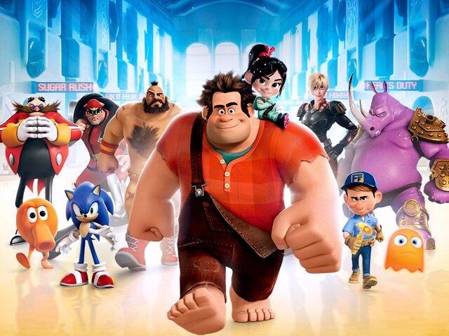

About Ralph
Ralph is a video game character and the main protagonist of the Disney animated film "Wreck-It Ralph". He is a pixelated arcade game character who lives in the fictional video game "Fix-It Felix, Jr.".

Ralph and his friends.
Ralph’s Characteristics
- Ralph is a large, muscular character with a square-shaped head and a prominent jawline.
- He has a kind heart and is often misunderstood by others due to his appearance.
- Ralph is determined and persistent, always striving to prove himself as a hero.
- He has a strong sense of loyalty and friendship, especially towards his fellow video game characters.
- Ralph is also known for his love of candy and sweets, which he often indulges in during his adventures.
Ralph’s Friends
- Vanellope von Schweetz - a spunky and mischievous racer from the game "Sugar Rush".
- Fix-It Felix Jr. - the hero of Ralph's game who is tasked with fixing the damage caused by Ralph.
- Calhoun - a tough and skilled soldier from the game "Hero's Duty".